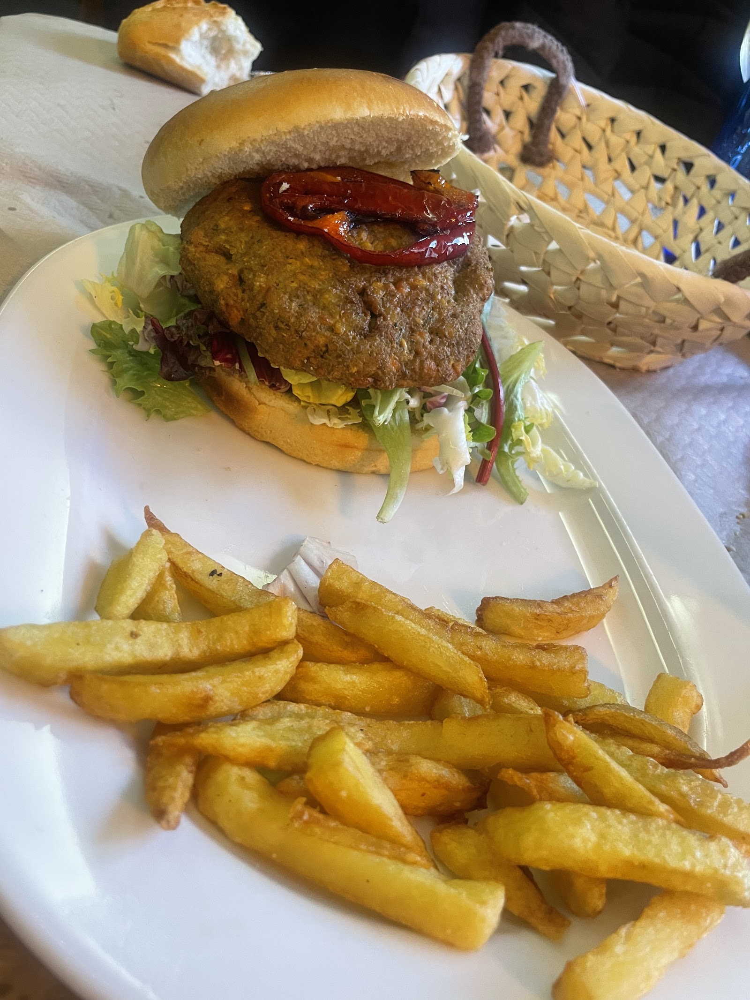

Raciones, carnes y menú del día desde 1976.
Cocina mediterránea en Alcorcón con raciones para compartir, menú del día a 16 € y comida a domicilio por WhatsApp.

Una cocina original, con platos de siempre y propuestas nuevas.
Si buscas restaurantes en Alcorcón donde comer bien y a buen precio, El Fermín combina gran cantidad de platos tradicionales con otros más modernos de alta cocina.
Llevamos más de 40 años en Alcorcón. Carnes, pescados, mariscos, raciones, bocadillos, comida vegana y una gran carta de vinos.
- Acceso para sillas de ruedas
- Aseo accesible con silla de ruedas
- Asientos accesibles con silla de ruedas
- Tabla de alérgenos disponible en PDF
Carta completa
Precios en euros. Los platos con alérgenos se indican en la tabla de alimentos.
Raciones variadas 22 platos
- Croquetas caseras de jamón ibérico (6 uds.)9,80 €
- Croquetas de cochinillo con manzana (6 uds.)10,00 €
- Tequeños de queso con salsa de frutos rojos (6 uds.)10,00 €
- Alitas de pollo fritas (6 uds.)9,80 €
- Bravas o braviolis10,50 €
- Oreja a la plancha (tapa 9,20 €)14,80 €
- Quesadilla colombiana rellena de pollo desmechado y queso16,50 €
- Torrezno de Soria con patata revolcona14,50 €
- Salteado de setas naturales con queso de cabra16,00 €
- Corazón en adobo16,00 €
- Boquerones fritos15,00 €
- Chopitos fritos16,00 €
- Calamares a la andaluza17,50 €
- Sepia a la plancha17,50 €
- Rejos a la andaluza17,00 €
- Fritura andaluza para 2 personas25,00 €
- Flores de alcachofa a la plancha (4 uds.)14,00 €
- Pata de pulpo a la parrilla22,00 €
- Huevos rotos matanza16,50 €
- Huevos rotos granjeros16,50 €
- Huevos rotos ibéricos18,50 €
- Huevos rotos jamón y bacon15,50 €
Raciones mixtas 8 platos
- Bravas o braviolis con croquetas15,80 €
- Bravas o braviolis con alitas15,80 €
- Alitas con croquetas15,50 €
- Calamares con boquerones15,50 €
- Calamares con croquetas17,00 €
- Chopitos con rejos17,00 €
- Chopitos con croquetas16,00 €
- Calamares con chopitos17,50 €
Mariscos 6 platos
- Ceviche de pulpo y langostino con aguacate y mango18,50 €
- Gambón a la plancha (ración 12 uds.)18,00 €
- Gamba blanca a la plancha (ración 20 uds.)25,50 €
- Coquinas en salsa de verdejo17,50 €
- Parrillada de marisco para 2 personas47,00 €
- Parrillada de marisco con bogavante para 2 personas56,00 €
Carnes 11 platos
- Chuletón de ternera de Ávila D.O. (550 gr. aprox.)29,50 €
- Lomo bajo de retinto D.O. (550 gr. aprox.)28,50 €
- T-bone de ternera Jersey danesa (600 gr. aprox.)34,00 €
- Presa de vaca semental (400 gr. aprox.)27,00 €
- Tomahawk de ternera Angus (1300 gr. aprox.)51,00 €
- Carne madurada para 2 personas (1100 gr. aprox.)49,70 €
- Parrillada de carne con patatas y pimientos para 3 personas55,00 €
- Troceado Fermín28,50 €
- Secreto de cerdo trinchado con chimichurri argentino19,00 €
- Hamburguesa artesana de ternera13,50 €
- Hamburguesa de la tierra con queso de cabra y cebolla caramelizada14,50 €
Ensaladas 4 platos
- Ensalada Fermín13,50 €
- Ensalada Emilio13,00 €
- Tomate negro en gajos con ventresca, cebolla morada y vinagreta francesa14,50 €
- Carpaccio de tomate negro con burrata, vinagreta de pesto y nueces15,50 €
Bocadillos 8 opciones
- Fermín8,00 €
- Emilio8,00 €
- Rubén8,00 €
- Calamares8,00 €
- Oreja6,50 €
- Bacon6,00 €
- Lomo6,00 €
Comida vegana 5 platos
- Croquetas veganas9,50 €
- Empanadas criollas veganas (unidad)3,00 €
- Wok de verdura de temporada15,50 €
- Risotto de setas con leche de coco16,50 €
- Troceado Fermín vegano17,00 €
Postres 6 platos
- Brownie casero con helado de vainilla5,50 €
- Pudding casero5,50 €
- Tarta de queso con arándanos5,50 €
- Tarta de toblerones5,50 €
- Fruta de temporada2,50 €
- Helado de 2 bolas3,50 €
Vinos 11 referencias
- Condado de Oriza crianza18,90 €
- Pago de Fuentecojo (autor)29,90 €
- Arnegui crianza16,90 €
- Arnegui reserva21,50 €
- Analivia verdejo selección17,50 €
- Mucho Más16,00 €
- Mucho Más rosé16,00 €
- Lar de Barrios crianza16,00 €
- Lar de Barrios semidulce16,00 €
- Pulpo albariño 100%23,00 €
- Pulpo godello23,00 €
Comida a domicilio
Pide la carta o el menú del día por WhatsApp. Te lo llevamos a casa en el horario de reparto.
Pedir por WhatsAppWhatsApp de pedidos: 640 293 202
Horario de reparto entre semana
De 13:00 a 16:00 y de 20:00 a 00:00. No hay reparto los lunes por la tarde ni los martes, que cerramos por descanso.
Horario de reparto en fin de semana
De 13:00 a 15:30 y de 20:00 a 00:00.
Menú del día a domicilio
16,00 €. Refrescos de 50 cl a 1,30 €.

Zona infantil con monitora
Somos uno de los restaurantes pioneros en Alcorcón con zona infantil. Mientras los adultos comen, los niños juegan con una monitora.
Horario
- Viernes: 20:00 a 00:00
- Sábado: 13:00 a 17:00 y 20:00 a 00:00
- Domingo: 13:00 a 17:00
Condiciones
- De 3 a 12 años
- Aforo máximo de 15 niños
- Gratis si el niño ha comido o cenado en el restaurante
- 2 € para el resto
Menú infantil: 13,50 €
Incluye postre y bebida.
- Cinta de lomo con patatas y huevo frito
- Escalope de pollo y huevo frito
- Hamburguesa de ternera con queso y patatas
- Espaguetis boloñesa con queso
Reservar mesa
Reserva online en nuestro sistema de reservas. Elige día, hora y número de comensales.
Señal de 5 € por comensal
Para confirmar la mesa, el restaurante te contactará para dejar una señal de 5 € por comensal. La reserva no queda confirmada hasta que recibas el email o el SMS del restaurante.
Por teléfono: 916 10 31 03
Horario del restaurante
- Lunes12:00 a 01:00
- MartesCerrado
- Miércoles a domingo12:00 a 01:00
Lo que dicen los clientes en Google
4,4 de 5 con 6.158 reseñas en Google
"Una de las mejores opciones para comer bien en Alcorcón a un precio razonable."
"¡Nos encantó! Roger en su atención fue fantástico y la comida deliciosa."
"Camareros muy atentos, menú variado y las raciones muy abundantes."
El local y los platos



Las fotos de platos de clientes en Google pertenecen a sus autores: Susana Isabel (paella), Glovo (entrecot, gambas), Laura Garmo (tarta de chocolate), Matt Accardi (fachada), Susana F. (hamburguesa).
Rincón vegano
Opciones veganas en la carta y en el menú del día. Nuestro equipo se ha formado con Luis García Vegan.
- Croquetas veganas9,50 €
- Wok de verdura de temporada15,50 €
- Risotto de setas con leche de coco16,50 €
- Troceado Fermín vegano17,00 €
Monólogos y eventos
Monólogos todos los jueves. Muchos famosos han pasado por El Fermín, entre ellos Carolina Noriega.
También organizamos cenas de amigos, de empresa, bodas, bautizos, comuniones y eventos de cualquier tipo.
Para consultar fechas y eventos, llámanos al 916 10 31 03.